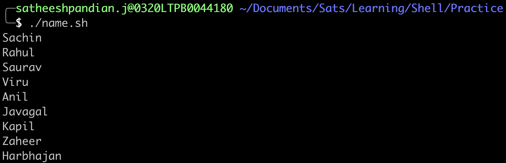
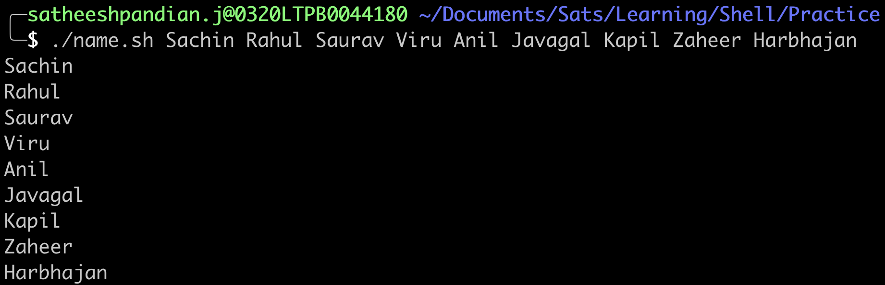
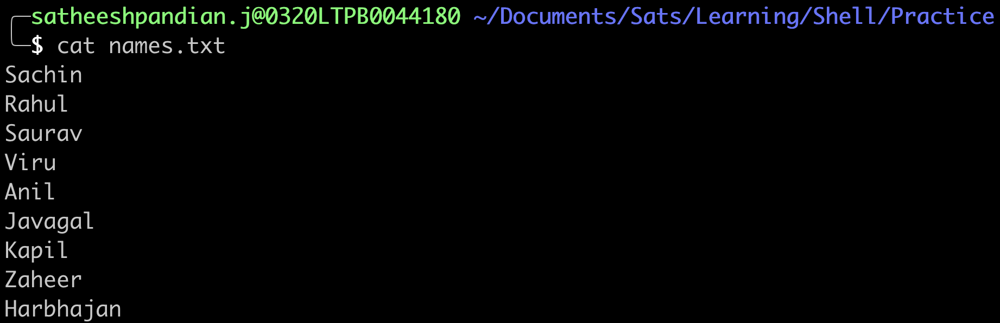
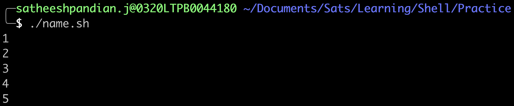
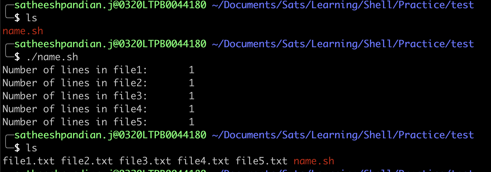
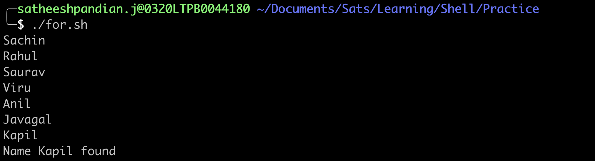
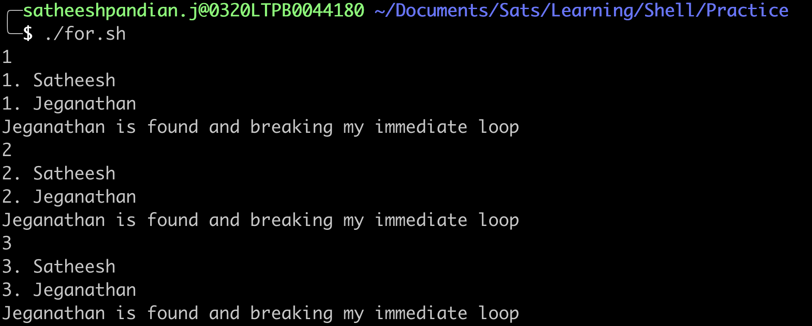
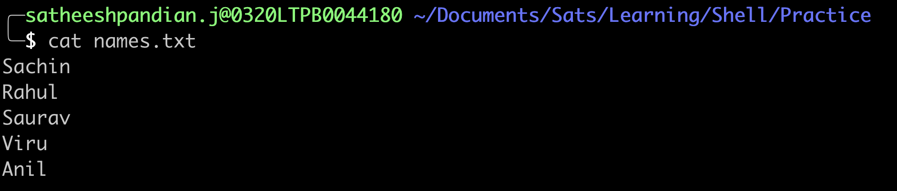
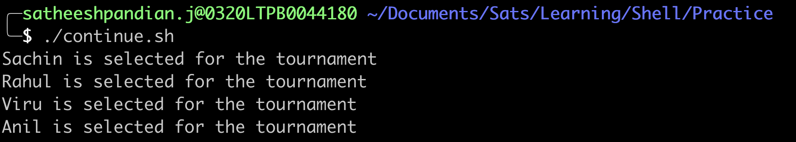

The for loop
In general, for loop can be used in the below scenarios.
- Executes a command or set of commands many times
- Iterate through files
- Iterate through lines within the file
- Iterate through output of the command
How does it work?
This loop allows for specification of a list of values. A list of commands is executed for each value in the list.
Syntax
whereas, LIST can be any list of words, strings or numbers or generated by any command.
The first time through the loop, "variable" is set to the first item in LIST. The second time, its value is set to the second item in the list, and so on.
The loop terminates when no items are left in LIST. The return status is the exit status of the last command that executes in the for loop. If no commands are executed, the return status is zero.
With Strings
Example
#!/bin/bash
for name in Sachin Rahul Saurav Viru Anil Javagal Kapil Zaheer Harbhajan
do
echo "${name}"
done
{kind=link}

NOTE:
- When [ LIST ] is empty and number of arguments are passed through runtime as environmental variable, then [ LIST] is replaced with in $@
Example
Assume below code snippet saved as shell script and while executing this shell script, we need to pass the input list as an arguments.
{kind=link}

- We can pass the list from the file as well. We can use backquotes to pass the input file as shown below. This is one way of passing the input list.

{kind=link}
Output
- Another way of passing the input list is within parenthesis. This is the best practice to follow. The reason is that you can pass multiple commands within parenthesis.
Output
{kind=link}
REMEMBER:
- You can pass multiple commands within backquotes too (like below). But that is not a suggestible way.
With Numbers
{kind=link}

The same code can be little modified with {starting_number..ending_number} instead of individual number.
Note
There is no space within the curly braces. If there is any space, then that will be considered as separate string
Output will be
C style for loop with numbers
for((index=1; index<=5; index++))
do
touch file${index}.txt
echo "${index}" > file"${index}.txt"
echo "Number of lines in file${index}:$(cat file${index}.txt |wc -l)"
done
{kind=link}

Use of break command
Break command is used to exit of the immediate loop.
Syntax
for <variable> in [ LIST ]
do
statements/COMMANDS
if [[ condition ]]
then
break # In general, break can be used in loops to check if certain condition is met. If the condition is met, then exit of the loop
fi
done
Example
Let us assume, if the file contains many names. We would like to search a particular name if it exists in the file. If found, we can stop the search. To do this,
#!/bin/bash
# This script is to just print the given number if it is less than 4.
for name in $(cat names.txt)
do
echo "${name}"
if [[ "${name}" == "Kapil" ]]
then
echo "Name ${name} found"
break
fi
done
{kind=link}

Another example with nested for loop along with break command
#!/bin/bash
## This script is to just print the given number and also names for each number
for number in {1..5} # OUTER FOR LOOP
do
echo ${number}
for name in Satheesh Jeganathan Adhira Praba # INNER FOR LOOP
do
echo ${number}. ${name}
if [[ "${name}" == "Jeganathan" ]]; then
echo ${name} is found and breaking my immediate loop
break # BREAK ONLY INNER FOR LOOP
fi
done
if [[ ${number} -eq 3 ]]; then
break # BREAK ONLY OUTER FOR LOOP
fi
done
{kind=link}

Use of continue command
Continue command is used to skip the current iteration and move to next iteration in the loop.
Syntax
for <variable> in [ LIST ]
do
statements/COMMANDS
if [[ condition ]]
then
continue # In general, continue can be used in loops to check if certain condition is met. If the condition is met, then skip that iteration
fi
done
Example
#!/bin/bash
## This script is to just print the player who's name is not Saurav.
for name in $(cat names.txt)
do
if [[ "${name}" == "Saurav" ]]
then
continue # Skip the rest of the statements in for loop (immediate)
fi
echo "${name} is selected for the tournament"
done
{kind=link}

{kind=link}
